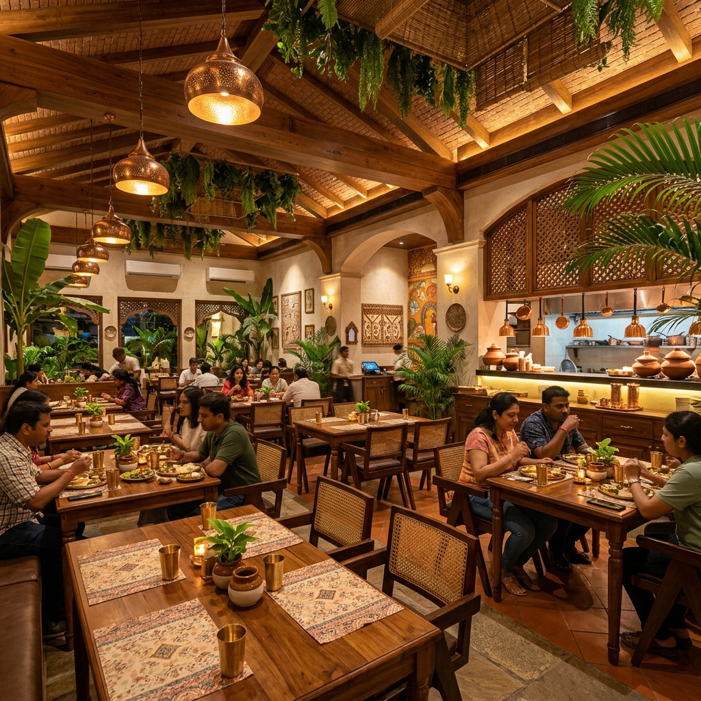
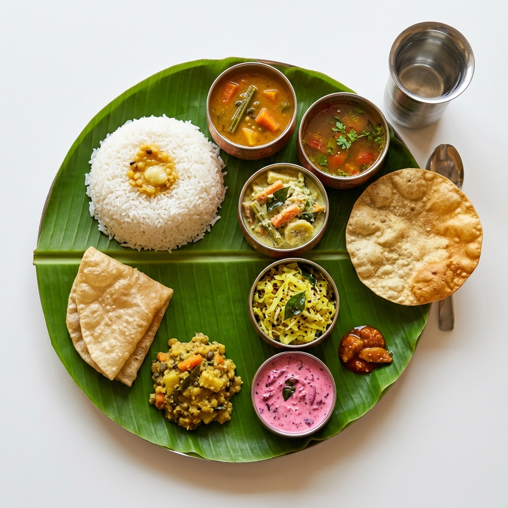

A journey mapping the roots of authentic South Indian cuisine.
Welcome to Sangam Mess, where every meal is a celebration of tradition and culture. Inspired by the humble yet culturally rich "mess" culture of South India, we bring you foods cooked with love, purity, and heritage.
Our journey began with a simple idea: to serve homemade-tasting, authentic food in an environment that feels welcoming to families, travelers, and food lovers alike. We specialize in curating traditional recipes passed down through generations, ensuring you get the most authentic taste possible, from our Nadan Beef Roasts to our festive feasts.


From our daily specials and festive offerings like the grand Onam Sadhya, to our crispy dosas and aromatic filter coffee, hygiene and quality are our top priorities.
Experience our vibrant hospitality today. We select our ingredients carefully to preserve the authentic homemade experience that Sangam Mess is known for.